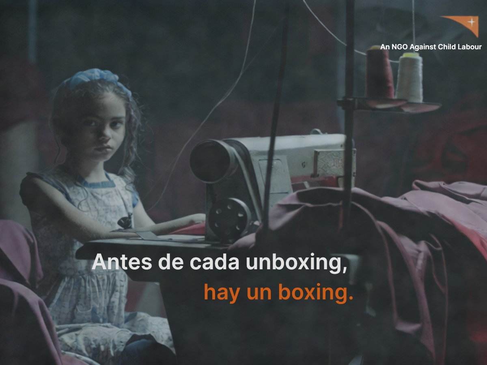

The challenge: how can society be concerned about child labour?
What happens before the "unboxing" of any product?
The international NGO World Vision needed a simple, low-budget idea that could make everyone aware of the situation of thousands of children forced to work from an early age. No paid media, no big production: the idea had to do all the work.
The idea
Together with World Vision, we latched onto one of the most-watched categories on YouTube: unboxing videos. Before viewers could watch a youtuber open a given product, we placed pre-rolls showing the "boxing" that happened first. Segmented by product type — fashion, technology — they revealed the harsh reality of the kids who assemble the very products the youtubers were about to unbox.
The medium was the message: the contrast between the thrill of opening a box and the reality of who filled it turned every pre-roll into a direct, targeted and almost free punch.

The "boxing": the reality before the unboxing.
The case, in video.
Recognition
Three golds (El Chupete) and two shortlists (El Sol) for a low-budget campaign: the best proof that the idea, not the media spend, did the work.
Triple Gold · Media, Digital-YouTube and Film
Gold · Best Social Purpose Campaign
Double Shortlist · Digital + Activation & Brand Experience
Got a similar challenge?
Let's talk →